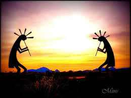

The Legend of Kokopelli
December 6, 2020. Published by GuynnR.

The Gods will forever rise!
Kokopelli is one of the most intriguing and widespread images surviving from ancient Anasazi Indian mythology and is a prominent figure in Hopi legends. The figure represents a mischievous trickster or the Minstrel, spirit of music. Kokopelli is considered a symbol of fertility who brought well-being to the people, assuring success in hunting, planting and growing crops, and human conception.
Kokopelli is a proper noun, so it should always be capitalized and used just like a name:
- Correct: Kokopelli is a whimsical figure
- Incorrect: I saw a kokopellis on coffee mugs today.
The following article was contributed by Cheryl Joseph, formerly of Kokopelli's Kitchen.
Kokopelli was the predominant figure in the religious landscape of the Southwest, from 500 A.D. through 1325 A.D., until the development of the Katsina Cult. Kokopelli is most typically viewed as a fertility deity and is still worshipped by many Native American tribes in the Southwest. He is also thought to be a trickster, traveling salesman, insect, musician, warrior, and hunting magician.
What Does Kokopelli Look Like?
His likeness varies almost as much as his legends. He is usually shown as a humpbacked flute player, often with a large phallus and antenna-like protrusions on his head. Some images show knobby knees and clubfeet. These physical deformities, along with the humpback and permanent erection, are the results of Pot's Disease, a form of tuberculosis
Kokopelli's Humpback
It is thought by some that Kokopelli's humpback may have evolved from a sack that was slung over his shoulders. The contents of his sack vary as much as the legends.
Kokopelli's Sack of Trade
The sack may have contained goods for trade. This is based upon the beliefs that Kokopelli represented early Aztec traders, known as Potchecas, from Meso-America. These salesmen would travel from the cities of the Maya and Aztec with their goods in sacks slung across their backs. These traders also used their flutes to announce themselves as they approached a settlement.
Kokopelli's Sack of Gifts
More commonly, it is thought that Kokopelli's sack was full of gifts. According to a Hopi myth, Kokopelli's sack contained babies to be left with young women. At San Idelfonso, a Pueblo village, Kokopelli is thought to be a wandering minstrel with a sack of songs on his back who trades old songs for new. According to Navajo legend, Kokopelli is a God of harvest and plenty. It is thought that his sack was made of clouds full of rainbows or seeds.
Source: https://www.tripsavvy.com/the-legend-of-kokopelli-2683061 Author: Judy Hedding